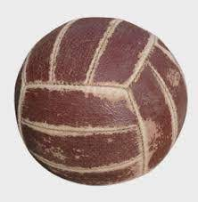

Vilijam Morgan je zapisan kao osnivač odbojke, koju je originalno nazvao „mintonet“.
U to vreme Morgan nije nigde mogao naći igru koja je ličila na odbojku, pa ju je on stvorio iz svojih metoda treniranja i rekreacije. Opisujući svoje prve eksperimente, Morgan je rekao: „U potrazi za odgovarajućom igrom, prvo mi je tenis pao na pamet, ali za njega su nam bile potrebne loptice, reketi, mreža i ostala oprema pa sam od njega odustao, no ideja mreže mi se učinila zgodnom. Podigli smo mrežu na visinu od 1.98 m, iznad glave prosečnog muškarca. Uz to nam je bila potrebna i lopta. Prvo mi je pala na pamet košarkaška, ali ta je bila prevelika i preteška." Na kraju, Morgan je zamolio da u fabrici naprave odgovarajuću loptu, što su i učinili. Napravili su kožnu loptu, čiji je obim bio oko 65 cm, a masa oko 300 grama. Nakon toga, Morgan, s još dva prijatelja, napisao je prva pravila odbojke.
1896.
Ove godine organizovana je konferencija na kojoj je Morgan prvi put demonstrirao novostvorenu igru.

Prva odbojkaška lopta
Istorija odbojke u Srbiji
1924.
U našu zemlju odbojku donosi Vilijam Vajland, profesor folklora i narodnih sportova iz Ouklenda (Kalifornija), koji je u organizaciji Crvenog krsta održao niz predavanja i demonstracije američkih sportova u Beogradu i Novom Sadu. Smatra se da je njegov dolazak označio početak odbojke na ovim prostorima, a 1924. se smatra za godinu kada je prvi put odbojkaška lopta došla u Srbiju. Odbojka je bila poznata našoj javnosti i pre ovog događaja, ali javna utakmica sa zvaničnim odbojkaškim pravilima nije mogla biti održana ranije. Ipak, pre Drugog svetskog rata nije postojalo organizovano takmičenje u našoj zemlji. Odbojka je predstavljala jednu od vežbi i dopunski sport u okviru Sokolskih društava. Nezvanično, odbojku su igrali studenti na fakultetima, učenici po višim školama i gimnazijama, kao i članovi raznih gimnastičkih društava. U to vreme, odbojka nije zahtevala skupe rekvizite i posebne uslove za pravljenje terena, tako da je ovaj sport bio dosta razvijen i igrao se po letovalištima, plažama, parkovima itd.
1941. - 1944.
U periodu okupacije odbojka se igrala veoma aktivno, održavana su brojna takmičenja, a sve više sportskih klubova je osnivalo svoje odbojkaške sekcije.
1946.
Odbojkaški savez je osnovan u okviru Saveza za fizičku kulturu Jugoslavije.
1947.
Godinu dana kasnije, 1947. godine, osnovana je Svetska odbojkaška federacija (FIVB), a tadašnja Jugoslavija je bila jedan od 14 osnivača (uz Belgiju, Brazil, Čehoslovačku, Egipat, Francusku, Holandiju, Mađarsku, Italiju, Poljsku, Portugal, Rumuniju, Urugvaj i SAD).
1949.
Od 13. februara, Odbojkaški savez je postao samostalna sportska organizacija. Dve godine kasnije, na Evropskom prvenstvu za seniorke održanom u Parizu, stigla je prva medalja za naš sport - ženska odbojkaška reprezentacija Jugoslavije osvojila je bronzanu medalju. Taj uspeh su ponovili seniori 1975. godine kada je naša zemlja prvi put u istoriji bila domaćin najvećeg evropskog takmičenja u muškoj i ženskoj konkurenciji. Naši odbojkaši su u poslednjem meču Finalne grupe pobedili Bugarsku sa 3: 0 u prepunoj hali "Pionir" u Beogradu i okitili se bronzanom medaljom, ukrasivši tako besprekornu organizaciju prvenstva u našoj zemlji.
1964.
Uporedo sa razvojem odbojke u našoj zemlji, ovaj sport se razvijao i u svetu, a konačni potvrdu i priznanje dobio je uvrštavanjem u zvanični program Olimpijskih igara.